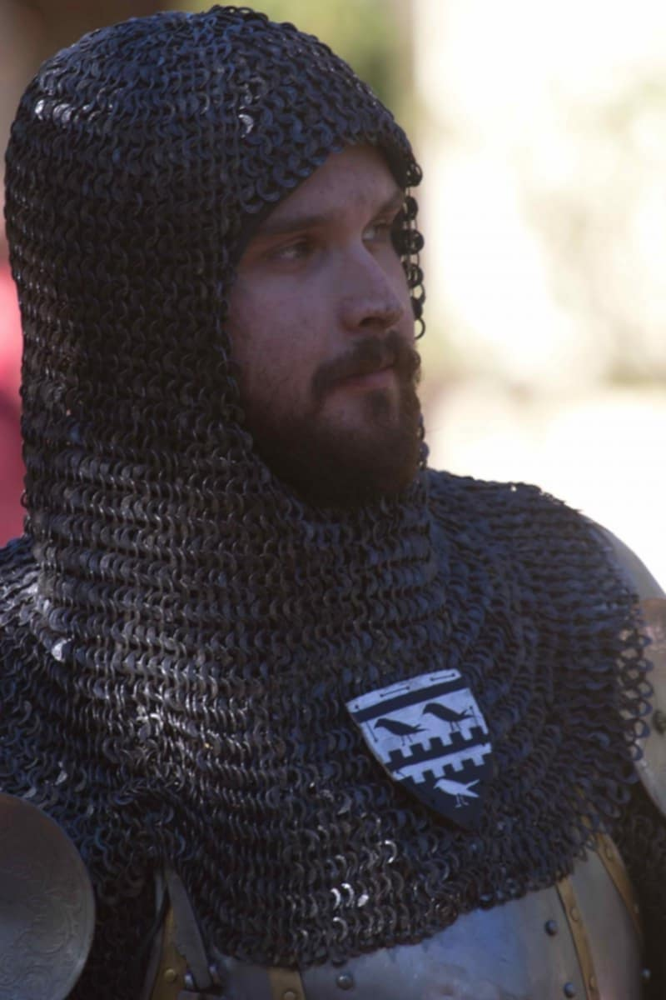

Sir Michael of Woodstock
Knight Banneret • Senior Knight of The Companie of the Badger

Basic Information
Name: Sir Michael of Woodstock
Origin: Born 1385 in Woodstock, England. His father was a veteran man-at-arms who had earned a reputation for bravery serving under the Black Prince, most notably at the Siege of Limoges (1370). His father was killed in a skirmish on the Scottish border years later.
Period: Late Medieval (1385-1420)
Status: Knight Banneret
Current Role: Senior knight within The Companie of the Badger
Early Life & Squireship (c. 1395 - 1410)
In recognition of his father's long and loyal service on the Scottish borders, the young Michael was granted the opportunity to page for a household knight in the service of the powerful Percy family, Earls of Northumberland.
He was raised to a squire under the direct service of the most famous knight of the age, Sir Henry "Hotspur" Percy. He learned the arts of war in the brutal, fast-paced environment of the Anglo-Scottish border.
He saw his first major action at the Battle of Homildon Hill in 1402, where, at age 17, his courage and skill in the fray were noted by Hotspur himself.
Military Career (1403 - Present)
The Percy Rebellion (1403)
When Hotspur and the Percy family rebelled against King Henry IV, Michael faced a crisis of loyalty. Choosing to remain loyal to the Crown, he abandoned his master and fought on the King's side at the Battle of Shrewsbury.
For his loyalty and proven skill, the King rewarded him by placing him in the service of a trusted royal commander, the Earl of Arundel. He spent the following years fighting under Arundel's banner in the long and brutal Welsh Wars against Owain Glyndŵr. In 1410, for his steadfastness and valour, he was knighted, becoming a Knight Bachelor.
1415 - The Agincourt Campaign
Sir Michael served in King Henry V's invasion of France. At the Battle of Agincourt, he distinguished himself greatly, holding his ground against repeated French charges and rallying the men around him.
1416 - Promotion
For his conspicuous valour at Agincourt, he was promoted on the field to the rank of Knight Banneret by a "Lord Terrence", acting in the King's name. This gave him the right to lead his own men under his own banner.
Current Status (1420): Service with "The Companie of the Badger"
Situation
At 35, Sir Michael is a respected battlefield veteran. After Agincourt, he formed his own retinue as a Knight Banneret. However, the immense cost of maintaining a company of men without a consistent royal contract proved financially ruinous, and he was eventually forced to disband his retinue.
Joining the Company
As a free agent with a valuable reputation, Sir Michael has joined "The Companie of the Badger" as an individual member. He seeks the steady pay and constant opportunity for battle that a large, well-organized free company can provide.
Rank & Role
Within the Companie of the Badger, Sir Michael is a senior knight. His rank as a Banneret affords him great respect, and his counsel is often sought by the company's leadership. On the battlefield, he serves as an elite heavy cavalryman and a rallying point for the other men-at-arms.